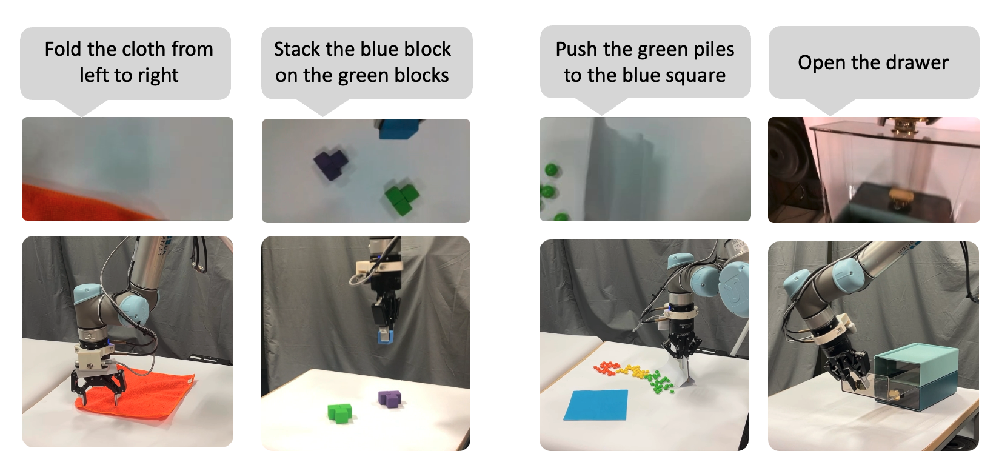
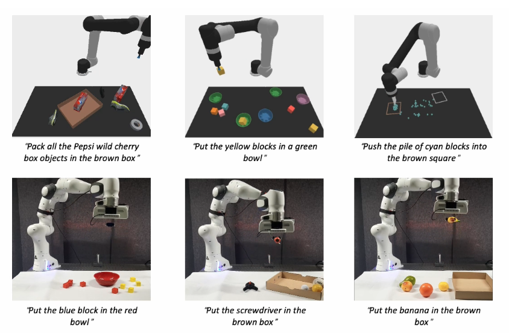
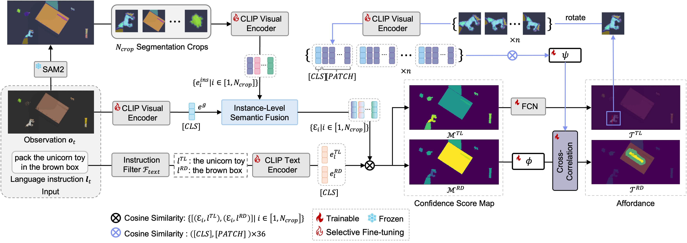
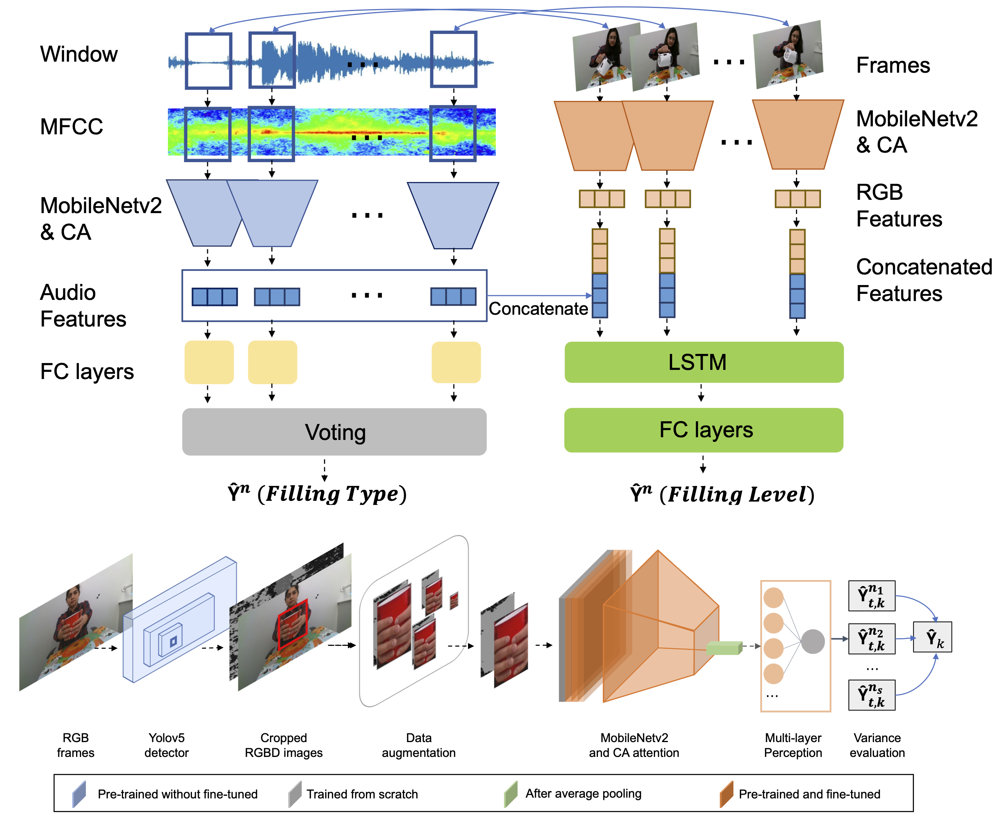
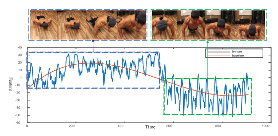

Current Research (Ph.D.)
My research interests lie in embodied AI, robotics, and computer vision. I am currently working on
multi-modal foundation models for generalizable robotic manipulation.
|
|

|
LaVA-Man: Learning Visual Action Representations for Robot
Manipulation
Chaoran Zhu,
Hengyi Wang,
Yik Lung Pang,
Changjae Oh
Conference on Robot Learning (CoRL) , 2025
arXiv
self-supervised VLMs pre-training for robot manipulation
|
|

|
DiffPort: Adapting Pre-trained Diffusion Models for Generalizable Robot
Manipulation
Chaoran Zhu*,
Junyoung Seo*,
Aliyasin El Ayouch,
Emmanuel Senft,
Seungryong Kim,
Changjae Oh,
Under Review
arXiv
/
website
|
|

|
Improving Generalization of Language-Conditioned Robot Manipulation
Chenglin Cui,
Chaoran Zhu,
Changjae Oh,
Andrea Cavallaro
Proc. IEEE/RSJ Int. Conf. Intell. Robots Syst. (IROS) , 2025
arXiv
/
website
/
code
/
bibtex
Learning object-arrangement tasks with just a few-shot demonstrations.
|
Early Research (Undergraduate)
|
|

|
Improving Generalization of Deep Networks for Estimating Physical
Properties of Containers and Fillings
Hengyi Wang*,
Chaoran Zhu*, Ziyin Ma,
Changjae Oh,
ICASSP, Grand Challenge: Audio-Visual Object Classification For Human-Robot Collaboration,
Rank 1st, 2022
arXiv /
code
|
|

|
Energy-based periodicity mining with deep features for action
repetition counting in unconstrained videos
Jianqin Yin, Yanchun Wu, Chaoran Zhu, Zijin Yin, Huaping Liu, Yonghao Dang, Zhiyi
Liu, Jun Liu
IEEE Transactions on Circuits and Systems for Video Technology (TCSVT) , 2021
paper
|
| |
{kind=link}